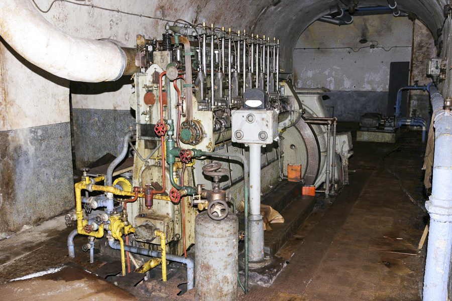

01
Première étape
L'entrée de l'ouvrage
Découvrez l'entrée de l'ouvrage, son organisation et les dispositifs qui permettaient de protéger l'accès.
Visite sans connexion
Téléchargez les pistes avant d'entrer dans l'ouvrage pour pouvoir les écouter hors ligne.
Les contenus ne sont pas encore téléchargés.
Parcours intérieur
Première étape
Découvrez l'entrée de l'ouvrage, son organisation et les dispositifs qui permettaient de protéger l'accès.

Deuxième étape
Découvrez comment l'ouvrage produisait son électricité et assurait son autonomie en cas de coupure du réseau extérieur.